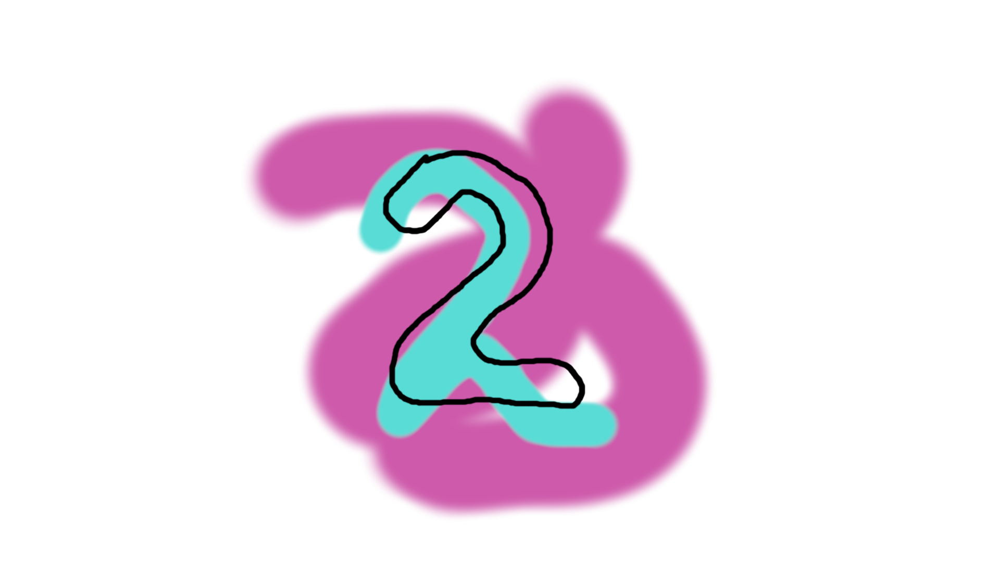
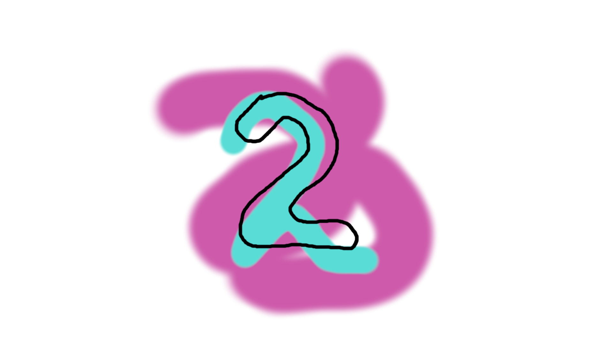
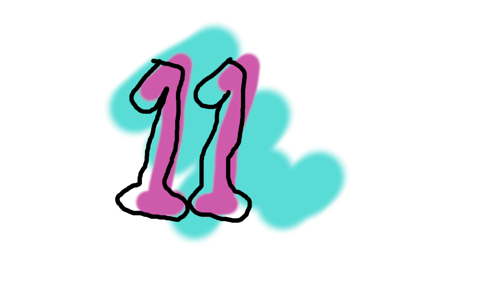
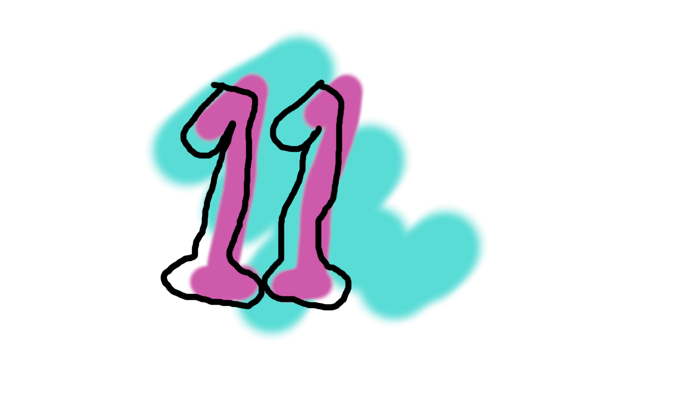

¡¡Aprende a decolorar tu cabello con estos sencillos pasos!! 👩‍🦳👩‍🦳
PASOS A SEGUIR
8.- Si necesitas otra decoloración, lo más recomendable es que dejes reposar a tu cabello al menos una semana, y en esa semana te dediques a nutrirlo, repararlo y matizarlo con algún shampoo matizante de color azul o morado, estos, para que tengan mejor eficacia se pueden poner en cabello seco, dejarlos unos minutos y después lavarlos con agua, o bien, tener el cabello mojado, aplicarlos y dejarlos reposar al menos 10 minutos. Para la segunda decoloración, sigue los mismos pasos que para la primera, esta vez estando más al pendiente del estado de tu cabello durante la decoloración, revisando que no se quiebre.
 



 
